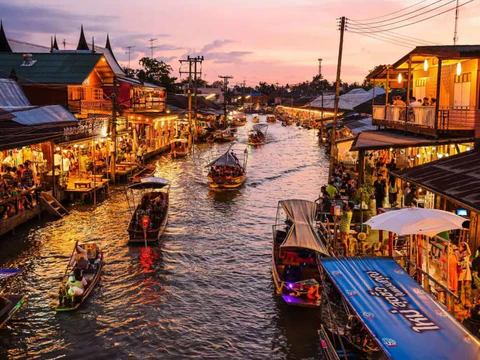

Điểm Tham Quan Nổi Bật
-
 Chùa Phật Ngọc (Wat Phra Kaew)
Chùa Phật Ngọc (Wat Phra Kaew)
- Cung điện Hoàng gia (Grand Palace)
-  Chợ nổi Damnoen Saduak
- Vườn nhiệt đới Nong Nooch
-
 Đảo Coral
Đảo Coral
 Xôi xoài: Xôi ngọt ăn kèm xoài tươi và nước cốt dừa béo ngậy.
Xôi xoài: Xôi ngọt ăn kèm xoài tươi và nước cốt dừa béo ngậy.